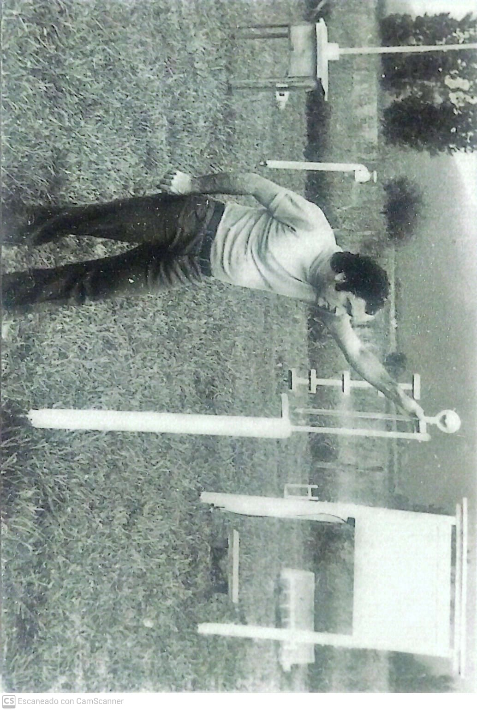
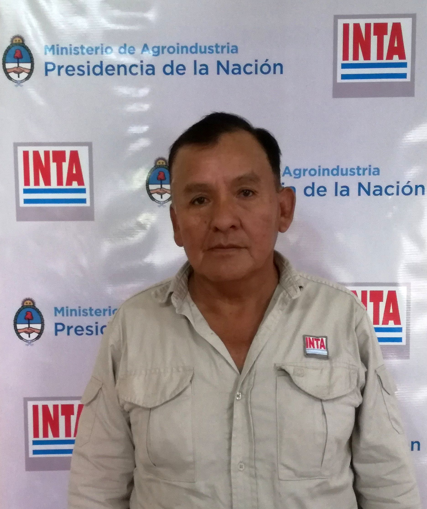
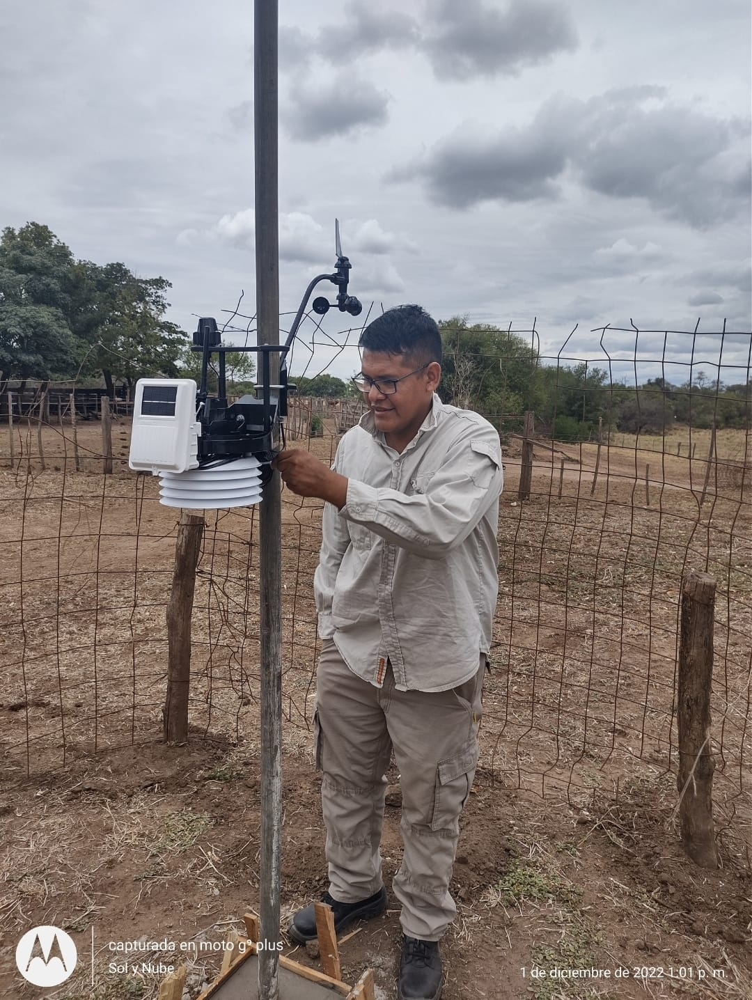
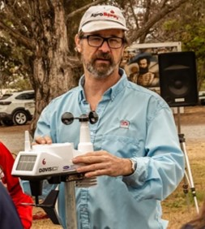

INTA EEA Salta | Serie Histórica Agroclimática 1969 - 2025
| Variable / Mes | ENE | FEB | MAR | ABR | MAY | JUN | JUL | AGO | SEP | OCT | NOV | DIC | TOTAL / PROM |
|---|
El Valle de Lerma es un valle intermontano de clima templado ubicado en el centro de la Provincia de Salta, delimitado geográficamente entre la Cordillera Oriental al oeste y las Sierras Subandinas al este. Posee una altitud promedio de 1.200 a 1.300 m s.n.m.
La interacción de microclimas, acceso a riego y variabilidad de suelos consolida al Valle de Lerma como un territorio altamente diverso e intensivo:
La recolección de datos agrometeorológicos en la Estación Experimental Agropecuaria (EEA) Salta del INTA (Cerrillos) cuenta con una continuidad histórica de más de medio siglo, la cual se consolidó a través de referentes clave en el tiempo:

Rol e Historia: El profesional que inició e impulsó formalmente este proceso fue el Téc. Ignacio Nieva, el meteorólogo más reconocido de la provincia de Salta. Tras realizar un curso de observador meteorológico en Salta, ingresó a trabajar al INTA Cerrillos en octubre de 1968.
Especialización: En 1978 fue becado por el INTA para especializarse en la Universidad de Buenos Aires (UBA) como Técnico en Agrometeorología. Durante 43 años (hasta su jubilación en 2011) fue la cara visible y responsable del monitoreo agroclimático, sentando las bases del registro sistemático de datos diarios en la estación.

Trayectoria y Roles: Ingresó a trabajar en 1989 junto al Téc. Ignacio Nieva, asumiendo de forma directa las observaciones meteorológicas diurnas de superficie en los horarios sinópticos reglamentarios (09:00, 15:00 y 21:00 hs).
Procesamiento de Datos: Tras las lecturas diarias de campo, realizaba los cálculos psicrométricos y meteorológicos necesarios para la determinación de las variables derivadas (tensión de vapor, humedad, punto de rocío, medias térmicas, entre otras).
Aporte clave en Digitalización: Fue una figura central en la sistematización, carga e informatización de las planillas históricas en papel hacia formatos digitales. Su trabajo permitió preservar décadas de series agrometeorológicas de la provincia de Salta, insumo clave que sirvió como base para estudios regionales y proyectos de alcance nacional como el Atlas Climático Digital de la Argentina.

El relevo operativo: Con el impulso de las nuevas tecnologías, Ignacio Nieva y Carlos Guanca comenzaron la instalación de las primeras Estaciones Meteorológicas Automáticas (EMAs) en el Valle de Lerma. Ante los frecuentes despliegues de campo de Carlos, su hijo Germán Guanca ingresó en 2004 para garantizar la continuidad de las observaciones convencionales y mediciones diarias.
Especialización y Mantenimiento: Germán se formó y certificó como Observador Meteorológico de Superficie. Con el tiempo, desarrolló un vasto conocimiento en estaciones meteorológicas automáticas de alta gama (como Davis Vantage Pro2, entre otras), especializándose en la captura de datos, diagnóstico, calibración y reparación técnica de los equipos.

A partir de 2004, aportó la visión de la Informática y los Sistemas de Información Geográfica (SIG). Su rol fue fundamental para coordinar junto a Germán la transición digital, procesar grandes volúmenes de datos e integrar las series climáticas a geoportales (como GEOINTA e IDESA), además de elaborar la cartografía agroclimática regional (mapas de precipitación, temperaturas y evapotranspiración).
Centro Regional Salta-Jujuy | Estación Experimental Agropecuaria Salta
Fuente de Datos: Registro agroclimático diario de la Estación Agrometeorológica INTA Cerrillos.
Dirección: Ruta Nacional 68 Km 172, Cerrillos, Salta, Argentina.
Sitio Web Oficial: https://www.argentina.gob.ar/inta
Registro histórico e impulso original de la estación agrometeorológica.
Observaciones de superficie, cálculos meteorológicos y digitalización de planillas históricas.
Observación meteorológica de superficie, mantenimiento técnico y gestión de la red de EMAs.
Procesamiento, estructuración de datos de la serie histórica y desarrollo de la aplicación web interactiva.